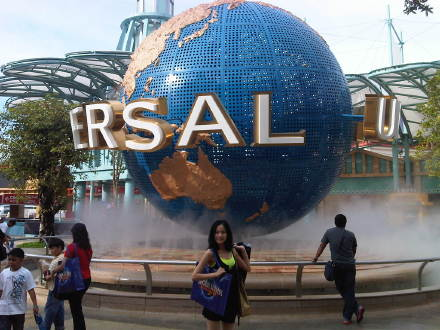

虽然已经有多次一个人旅行的经历，但还是头一次发现自己那么的......
原本是订了10月1日下午4点半的飞机返回，那天2点多就到机场check
in时得知航班delay至晚上8点，当时还满高兴的，因为能有足够的时间在机场吃喝玩乐，于是我疯狂的在机场吃我能吃的，买我能买的...
晚上7点，我来到了登机口发现一个人都没有，也没有看到任何通知，心想：现在的人怎么都那么淡定...过了5分钟，有位同航班男士跑我来好心的告诉我，航班又delay至凌晨2点，登记口也改了...我开始担心，因为第二天下午2点多火车要去合肥，但又想应该不会那么不走运，于是索性以缓解担心这样自我安慰的借口在机场疯狂了5个小时，还好平时一直是妈妈帮理财，自己本身没剩多少，但还是花光了所有的钱，自己对自己说缓解担心必须花的干净...
晚上12点我又来到了登机口，没有见其他人，只有那位同航班男士，其实彼此心里都又怀疑，但还是很坚定的等在那里，直到1点的时候，那位男士是在忍不住跑来说：有点不对劲，我再去问问...5分钟后，他跑回来告诉我了一个晴空霹雳的消息，原来我们同航班的100多人已经在11点的时候坐其他航班走了，只剩下了4个人是没有听到机场广播的...原来的航班已经delay之清晨6点...阿！天哪！我从来没有遇到这样的状况，焦急的到处询问机场的工作人员，每个人都告诉我说等能等。。。我真的着急了，我开始和各方朋友打电话抱怨，讲着讲着自己居然没有的哭了。。。我当时是真的急，因为2号去合肥火车真的赶不上了，可3日在合肥歌友会的新闻早就出去了。。。怎么办怎么办。。。
我绝望了半小时候突然听到机场广播开始喊：乘坐@#$$%##航班的miss huang
ling请到中转...我听到广播的同时手机爷响了，是机场的工作人员打来的：黄龄小姐，你在哪里，我现在很难走路吗，你不要动，我们过来找你。。。
真的感谢老天赐我那么好的朋友，他们得知我有难，借钱的借钱，打电话的打电话，一个还在沙漠中的旅游在手机信号很不好的情况下居然打了各种电话到我所乘坐的航空公司和我所在的地方投诉。还编了很多夸张的理由说我身体很不好，现在很虚弱之类的，因此我才被找到，安排了住处，不得不乘坐第二天10点航班返回...
合肥的火车也不得不改到3日最早班的，买的太迟，坐位已经没有了，我们和被我拖累的工作人员一起从上海站到了合肥。。。
虽然我是那么的...但我还是觉得航空公司的问题，就广播几遍谁听的见阿，登机口还老改来改去的，又不和当地机场的工作人员沟通好，去问的时候没有一个人清楚状况，一点也不责任，不管怎样，真的谢谢远方的朋友救了我